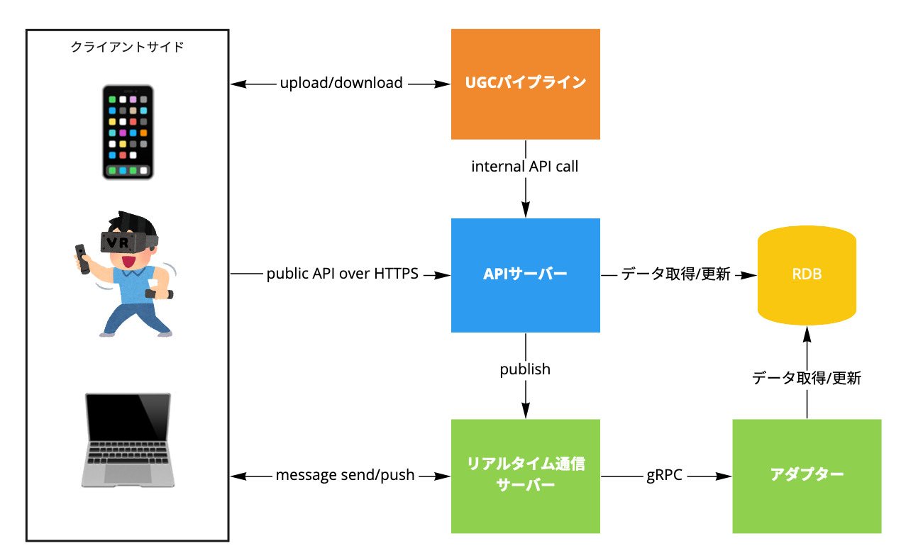
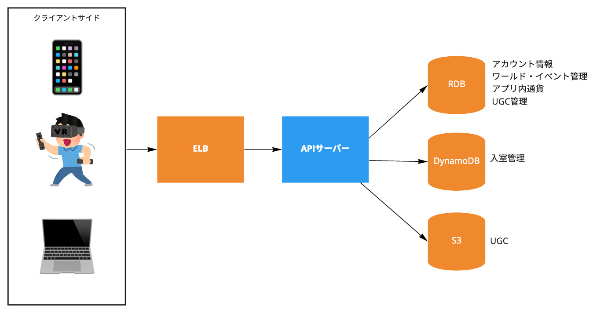
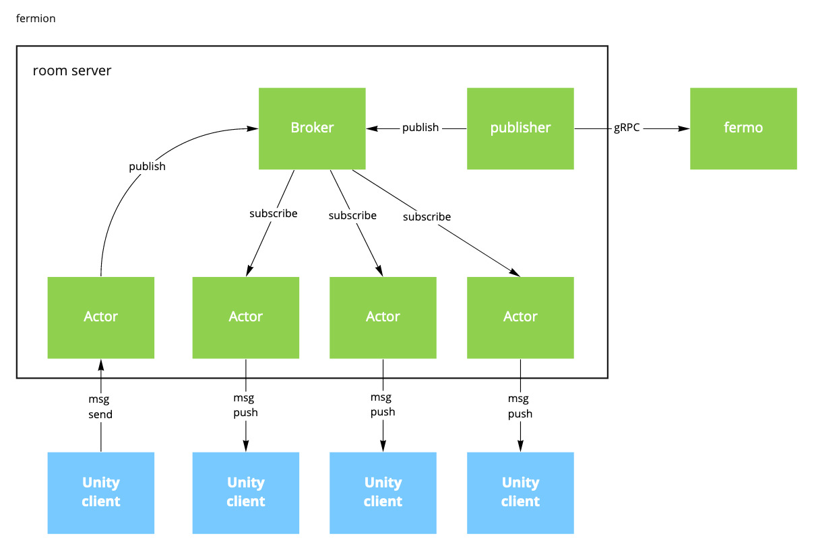
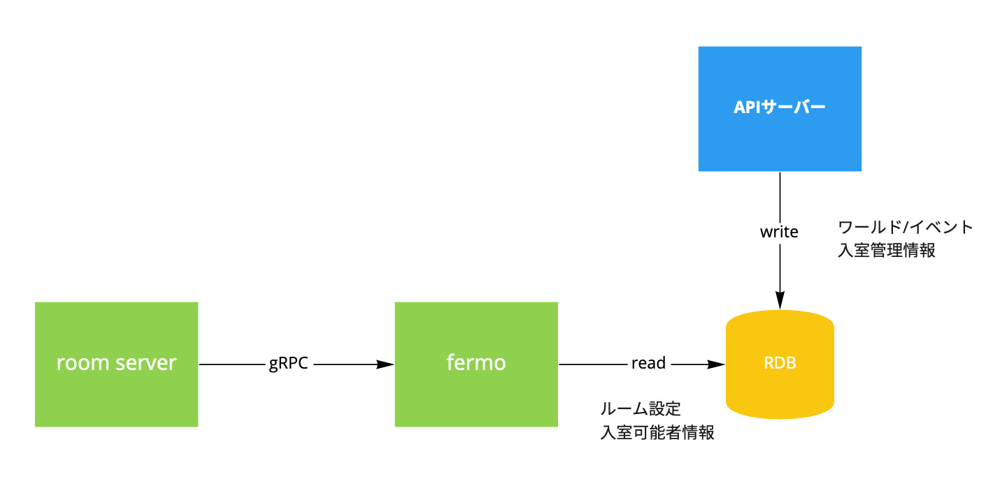
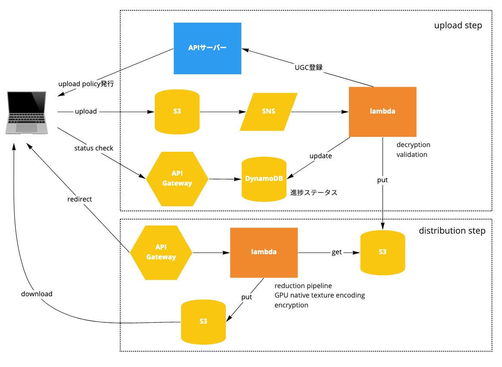

この記事は クラスター Advent Calendar 2021 の24日目の記事です。
昨日は anoriqq のジュニアなエンジニアを助けたクラスター社のメンタリング でした。
ごきげんよう。クラスター株式会社 のプラットフォーム事業部 engineチームの thara です。
名古屋からではなく愛知県瀬戸市からリモートワークで働いています。
今まで週1オフィス出社だったのが、来年から月1出社になるようです。やったね。
この記事では、 2019年のadvent calendarで kyokomi が書いたclusterのserverについて（入門編） の 後編 として、もう少し技術的に踏み込んだ2021年現在の構成とその課題について書きます。
全体構成

おおよその構成は2019年と変わっていませんが、改めて述べると
- APIサーバー
- RDBをバックエンドにおき、transactionalな処理を担う。
- 一部の機能では、リアルタイム通信サーバーに直接messageをpublishする。
- room server
- いわゆるリアルタイム通信サーバー
- clusterクライアントで表現される3D空間（以下、ルーム）上の複数ユーザーの同期を担う。
- それぞれのインスタンスが個別のルームに割り当てられる。
- アダプター
- 入門編時代には存在しなかったもの。
- リアルタイム通信サーバーからRDBに直接アクセスしたくなかったため設けられた中間レイヤー。
- UGCパイプライン
- 入門編には書かれていなかったもの。
- UGC（user generated contentsの略）のアップロードから配信までの一連の処理を担う。
この4つが主なサービスで全てGoで書かれています。この他にもバッチだったり細かなAWS lambdaがいくつも動いていたりしています。
ちなみに、この記事では詳細は書かないですがフロントエンドとして以下があります。
- Webアプリケーション
- https://cluster.mu/ これ
- React製のSPA。SSRはしていない。
- クライアントアプリ
- Android, iOS, Windows, macOS, SteamVR対応HMD, Oculus Quest2に対応。
- 3DフロントエンドはUnity製で、mobile appからはUaaLとして組み込んでいる。
では、上記のサーバーサイドの主要なサービスについて見ていきましょう。
ちなみに、それぞれに課題を書いてますがあくまでも自分個人の見解なのでご了承下さい。
APIサーバー

HTTPSエンドポイントを持つ、clusterの中心となるサービスです。 ユーザーの作成、認証/認可、ワールド/イベント管理、UGC管理、決済など、その役割は多岐に渡ります。 クライアントアプリから直接リクエストを受け取るだけでなく、後述のUGCパイプラインや全体構成の図には描かれていない他のコンポーネントからも使用される内部APIを提供しています。
以下のようなライブラリやサービスを使用しています。
- goa v1
- swagger.jsonによってクライアントコードを自動生成している
- sqlx
- ORMは使っておらず、SQLコードを直書き
- migorate
- 独自DBマイグレーションツール
- aws-sdk-go
- 主にS3, DynamoDBなど
- Firebase Auth
- Stripe
稼働環境はAmazon ECSです。これ以降のサービスも同様ですが、ほぼ毎日本番環境にデプロイしていて、リリースのためにメンテナンス期間を設けるようなことはしていません。
CI/CD環境はCircle CIを使っていて、DBスキーマダンプによる差分検知やテストコード自動生成など、テストコードはかなり厚く書かれています(たぶん)。
clusterのサービス群の中では一般的なWeb APIそのものなので、新規joinした方がコントリビュートしやすいサービスではあります。先ほど少し触れたように、WebフロントエンドもSPA化されているため、HTMLテンプレートを扱うことはありません。
課題
5年前から保守し続けていたコードベースがだいぶ膨らんでいます。そもそもclusterはVRイベントサービスとして作られ、VRソーシャルルームアプリ、バーチャルイベントプラットフォーム、バーチャルSNSを経て、現在はメタバースプラットフォームへと、ピボットほどではないにしろフォーカスする領域が変わっています。既存データを維持しつつ、ここまでサービスが変遷してきたことによって、現在では不適切な抽象化になっている箇所があることは事実です。
今後は、適切な抽象化によるプラットフォームとしての安定性・信頼性・変更可能性を確保しつつ、toB案件などのグロース領域において柔軟かつ迅速に発展していけるような切り分けをしていけると良いのではないかと思います。チーム構成もソフトウェア開発チーム1つだったのがengineチームとgrowthチームに分かれたことも相まって、その動きが加速していけると良いなぁと考えています。
room server

Unityクライアントと直接接続しリアルタイム通信を担う、ルーム内の3D体験を支える要となるサービスです。 APIサーバーのようなリクエスト-レスポンスモデルではなく、clientがmessageをroom serverに送信し、serverは必要に応じてルーム内の状態をclientにpushすることで接続しているクライアント間の状態を同期します。
各クライアント間でやりとりするmessageには、以下のようなものがあります。
- アバターの位置・向きなどの状態や、3点・6点トラッキング情報
- ボイスチャット音声データ
- ルーム内のアイテムの位置・向きや所有権
- エモーション
その他にも、リアルタイム通信サーバー自らクライアントに対してbroadcastするmessageがあります。
- 入室しているユーザーの情報
- 音量やBGM、会場AssetBundle URLなどのルームの設定情報
実装は、MQTTを独自に拡張したプロトコルを扱うTCP serverです。一般的なユースケースに合致するものはないため、フレームワークを使わず、ドメインにフォーカスした完全な独自実装になっています。 内部アーキテクチャはpubsubをベースとしつつ、各クライアントはサーバー上ではActorとしてモデル化しており、sync.Mutexやchannelなどを用いた非同期プログラミングの出番が多いですし、パフォーマンス要件もAPIサーバーより厳しいです。
稼働環境はAPIサーバーと異なり、EC2インスタンス1台の上でたかだか1プロセスが動作します。AutoScaling Groupによってあらかじめroom serverが稼働するEC2インスタンス群をプールしておき、新たなルームが作成された際にそのプールからEC2インスタンスをデタッチしてルームを割り当て、クライアントアプリから直接接続可能な状態にします。 ここら辺の詳細は バーチャル SNS の裏側 を参照してください。
ECSやk8sなどを使わないのかと疑問に思われるかもしれないですが、かなりシステムリソースやネットワーク帯域を使うサービスであり「抽象レイヤーをできるだけ減らして如何にスペックを引き出すか」というクラウドネイティブとは真逆の思想があるため、今のような構成になっています。
課題
実はroom serverに移行したのは今年に入ってからで、以前はずっとサードパーティのpure なMQTTサーバーを使っていました。サードパーティなので内部の実装に手を入れておらず（Go製ではなかった）messageをbroadcastするために全く別のプログラムをクライアントアプリと同じようにMQTTサーバーに接続し、broadcast用のmessageをpublishする、ということをしていました。それ以外にも、pureなMQTTサーバーを前提として設計された機能などが少なくないです。その制約がなくなった今room serverだからこそ成せる機能をどんどん実装していきたいのですが、pure MQTTサーバーを前提とした設計をベースとしたプロトコルの後方互換性を保ちつつ日々のリリースを通じてマイグレーションをしていかねばなりません。
幸い、マイグレーション自体は必要に応じてですが特に大きな問題もなく進んでおり、マイグレーションに対する勘所もわかってきたので、機能追加が進んでいる状態ではあります。
アダプター

room serverからRDBで管理されているデータにアクセスするための中間レイヤーであるgRPCサーバーです。
マイクロサービスパターンでいう破損防止レイヤーなのですが「破損しているわけじゃないしな・・・」と思って、とりあえずアダプターと言ってみました。
特筆すべきことがあるサービスではないのですが、APIサーバーから管理されるRDB上のデータと、room serverで扱うデータ形式の変換を担う、意外と重要なサービスです。
Amazon ECS上で稼働していて、ALBのgRPCサポートを使っています。
課題
ALBのgRPCサポートのおかげで負荷分散はだいぶ楽なのですが、取りうるgRPC固有metricsがHTTP/HTTPSのそれと比べて圧倒的に少ないです。今はgRPC request countぐらいしかありません。せめてHTTPCode_ELB_4XX_Countみたいに、gRPCステータスコードごとのmetricsが欲しいところ...
UGCパイプライン

ユーザーがアップロードしたUGCをダウンロード可能にする、サーバーレスアーキテクチャ上に構成された一連の機能群です。
大まかに以下のようなプロセスをたどります。
- APIサーバーがS3 upload policyを発行する
- クライアントがS3 upload policyを使ってS3にUGCをアップロード
- S3イベントをSNS subscriptionに通知
- SNS subscriptionをsubscribeしているAWS lambdaが起動
- AWS lambdaでなんやかんやする
- UGCのvalidation
- 配信用S3バケットにアップロード
- APIサーバーにinternal APIを通じてUGC管理情報を登録
- 上記のAWS lambda実行中、進捗状況をDynamoDBに保存する。
- クライアントはAPI Gatewayで公開されたステータスAPIを通じてDynamoDBの進捗状況を把握し、完了を待つ。
このパイプライン上で扱っているUGCで主なものは「アバターデータ」(VRM) です。 最近AvatarMakerが実装されましたが、これもアップロード処理やreductionなどの一部の処理はUGCパイプライン上に構築されています。AvatarMaker自体の詳細は AvatarMakerを支える技術 (cluster) - yutopp's blog を参照してください。
AWS lambdaも今までのサービス同様Goで実装されていますが、特にフレームワークなどは用いていません。
アバターデータを扱う箇所ではVRMやglTFなどの深いドメイン知識が求められます。APIサーバーやroom serverを常日頃触っているサーバーエンジニアではなく、アバター周りに明るいエンジニアがGoで書いてます。 正直、LOD関連のコードは今の自分にはよくわかってません（難しい。だいたいここら辺の領域での自分の成果はCIでPR出した時に圧縮結果のdiffが見れるようにはしたとかのCI/CD周りが中心だと思う）。
CI/CDは、細かなlambdaがいくつもあるのでGitHub Actionsでpath baseのworkflowを使っています。デプロイには lambroll を使わせてもらっています。（fujiwaraさん、--alias-to-latestオプション追加してくれて助かりました :pray: ）
課題
部分的なユニットテストはあるのですが、全体を包括したテストが欠けています。 （LocalStack入れなきゃ...）
昔はC#やJSで書かれていたlambdaをGoに移行した経緯があり、マイグレーション時のインパクトを減らすためにあえてGoらしくないコードがあったりなかったりしています。 （だいたい自分のせい。ごめんね...）
まとめ
clusterを支えるサーバーサイドの主なサービスを4つ紹介しました。 本当は監視系とか分析系とかにも触れたかったのですが、力尽きました。
これらのサービスを、4人（うち1人はAndroidアプリ兼任）+2人(インターン&業務委託) でメンテしています。人が圧倒的に足りてない...！
clusterは、ここ5年の間にかなり進化しました。これから1,2年後どうなっていくかわかりませんが、clusterカンファレンスで @c_c_kato が言っていたように、メタバースをコミュニティと共に定義し作り上げていく、その創造性を発揮するためのプラットフォームとして発展していくことには変わりありません。
クラスターでは、未知の問題に対して既存の体験を最大限に尊重しつつも、アグレッシブにサービスを成長させていけるようなソフトウェアエンジニアを募集しています。